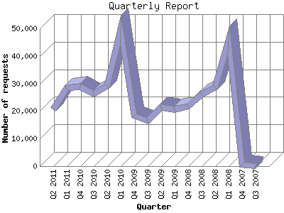

The Quarterly Report shows total activity on your site for each quarter of a
year. Remember that each page hit can result in several server requests as the
images for each page are loaded.
Note: Most likely, the first and
last quarters will not represent a complete quarter's worth of data, resulting
in lower hits.

| Quarter | Number of requests | Number of page requests | |
|---|---|---|---|
| 1. | Q3 2007 | 5 | 5 |
| 2. | Q4 2007 | 459 | 459 |
| 3. | Q1 2008 | 45,593 | 9,618 |
| 4. | Q2 2008 | 28,523 | 7,697 |
| 5. | Q3 2008 | 26,063 | 7,701 |
| 6. | Q4 2008 | 21,738 | 7,749 |
| 7. | Q1 2009 | 20,495 | 7,003 |
| 8. | Q2 2009 | 21,422 | 8,982 |
| 9. | Q3 2009 | 16,410 | 6,864 |
| 10. | Q4 2009 | 18,181 | 8,998 |
| 11. | Q1 2010 | 49,531 | 31,252 |
| 12. | Q2 2010 | 29,077 | 9,480 |
| 13. | Q3 2010 | 26,372 | 9,680 |
| 14. | Q4 2010 | 28,831 | 12,086 |
| 15. | Q1 2011 | 28,374 | 10,349 |
| 16. | Q2 2011 | 20,593 | 8,353 |
Most active quarter Q1 2010 : 31,252 pages sent. 49,531 requests handled.
Quarterly average: 9,142 pages sent. 23,854 requests handled.
This report was generated on June 15, 2011 08:35.
Report time frame September 27, 2007 09:53 to June 14, 2011 23:58.
| Web statistics report produced by: analog 6.0 / Report Magic 2.21 |